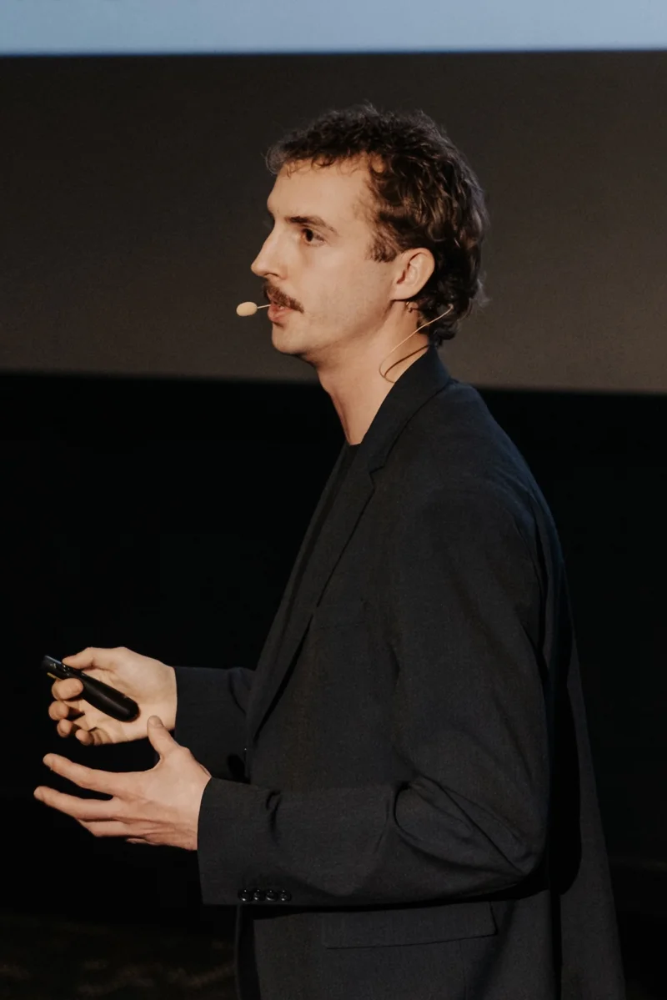

Tom Ebert
AI & Data Consultant
Ich komme aus der iOS-Entwicklung. Heute baue ich KI-Prototypen und bringe Änderungen an Datenpipelines in Produktion.
AktuellINFOMOTION

Was ich mache
KI-Anwendungen
Ich baue Prototypen mit Claude und schließe Tools und Datenquellen über MCP an.
Data Engineering
Ich modelliere Daten in Snowflake und schreibe SQL-Transformationen mit dbt.
CI/CD für Datenpipelines
Mit GitHub Actions automatisiere ich PR-Checks, Releases und Deployments.
Wie ich hier gelandet bin
Ich habe erst Wirtschaftsinformatik studiert und dann meinen B.Sc. in Data Science gemacht. Dazu kommen drei Jahre native iOS-Entwicklung und ein Jahr BI für eine Banking-App.
Wenn ich den Laptop zuklappe
Ich koche gern. Und ich würde sagen, ziemlich gut. Im Winter steh ich auf Ski, im Sommer geh ich segeln.